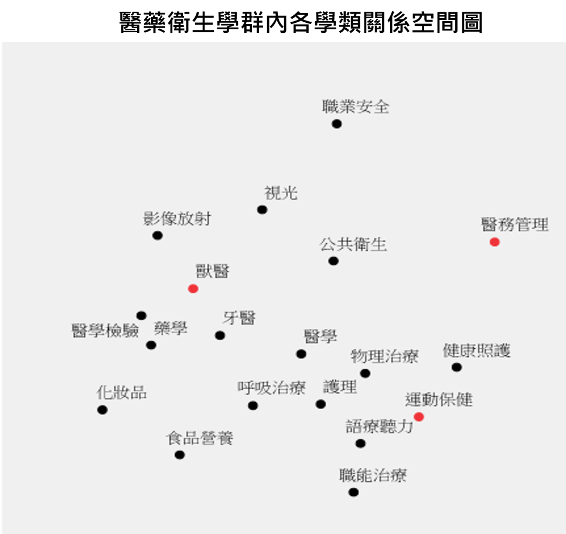

學群簡介
醫藥衛生學群學習維護人類身心健康相關之知識及技術，從個人到整個人群，包括身心健康的維持、疾病或傷害的預防與治療。
學習內容
以維護人類身心健康相關為目標之知識及技術，包含生理運作機制、藥物作用機制、疾病與傷害發展與預防等知識技術，在人類身上強調預防與治療的作用與機制。
學群內學類間關係圖

本學群以醫學學類為學群重心。學類聚集效果鮮明，如中下區的呼吸治療、護理、語療聽力、職能治療、運動保健、健康照護、物理治療為一群；牙醫、獸醫、影像放射、醫學檢驗、藥學為一群。另職業安全、醫務管理、食品營養、化妝品等呈現分散狀態，有其獨特性。生涯志向可依據相近位置的學類納為選擇範圍。
核心素養雷達圖
圖表來源為學群內各校系之重視百分比的平均值，加總為100%；百分比越高，代表越重視。
生涯發展
醫療／美容／生命相關職類 教育／學術／研究相關職類